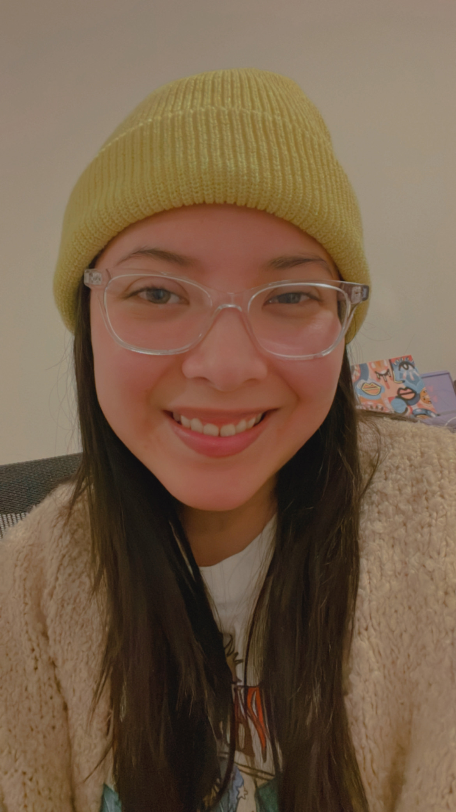

Rebeca Murcia | WDD 130
Hello! My name is Rebeca. My major is Web Design with emphasis in design. My husband and I live in Portland, OR,. I was born and raised in Guatemala City. I love all kinds of art expression. I’ve recently learned to appreciate more the art involved in film and music thanks to my husband (he’s a commercial music major). I enjoy crafting and DIYing. I never get tired on finding a new hobby and these past months I’ve been a lot into miniature art.I'm currently working in some projects to display next year at the Seattle Miniature Show. I'm beyond excited!